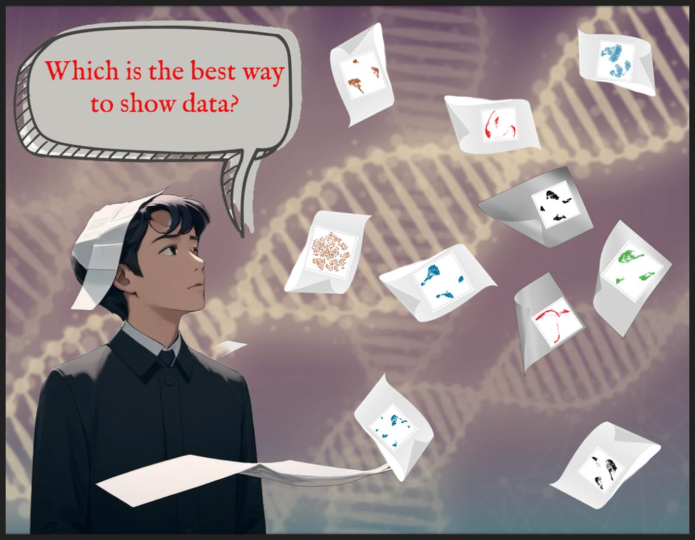
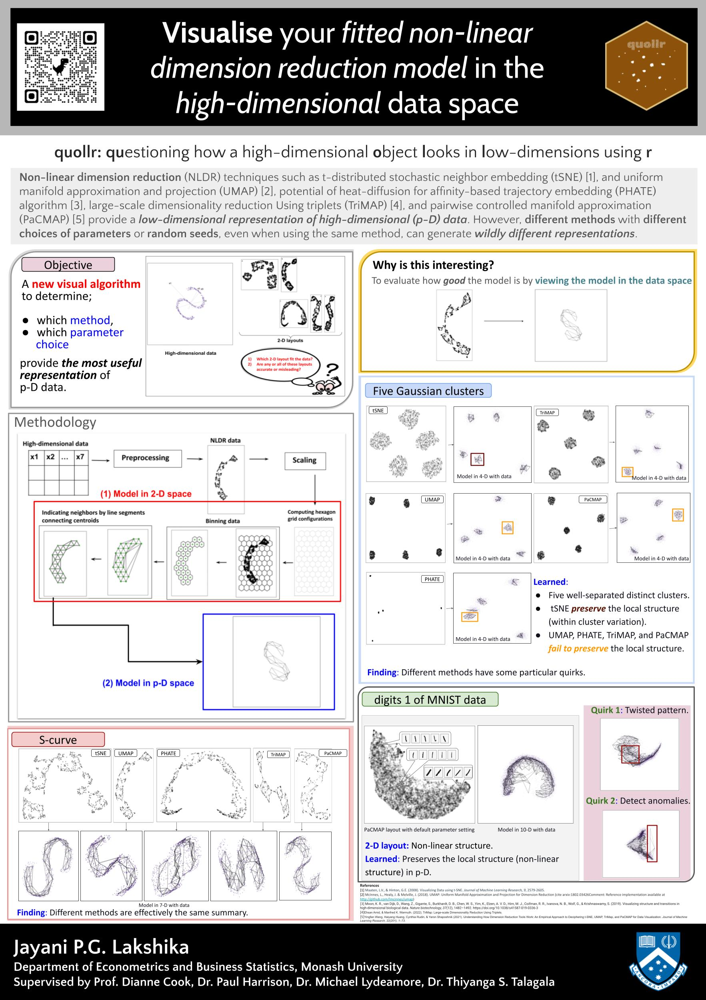
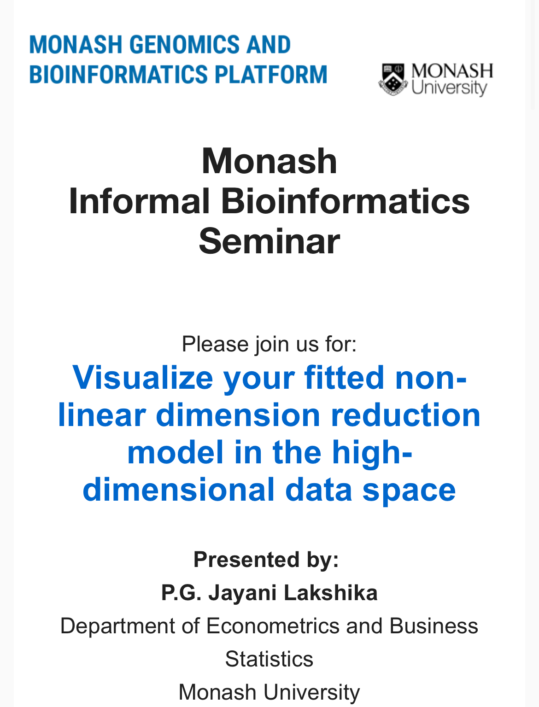
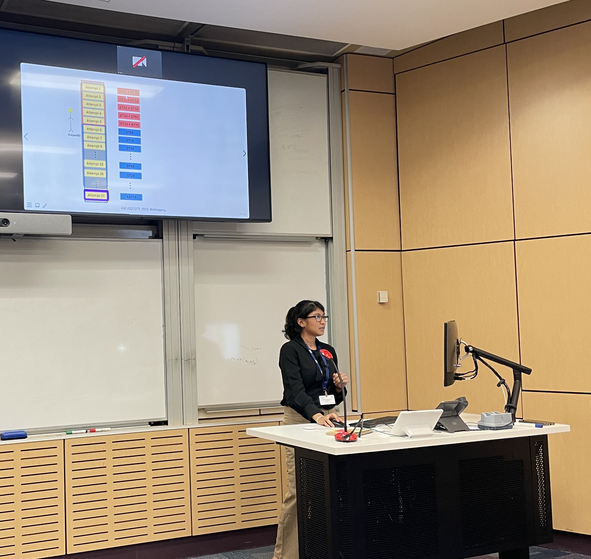
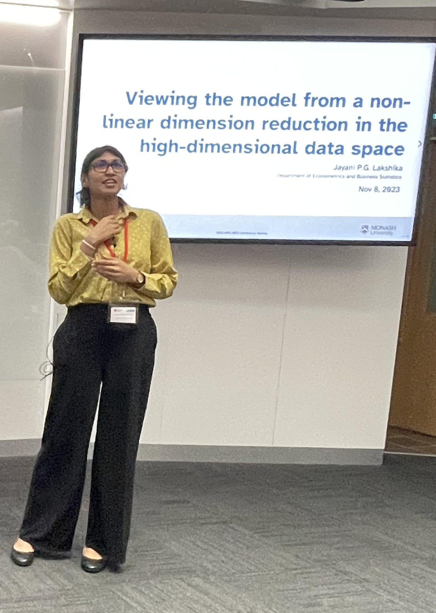
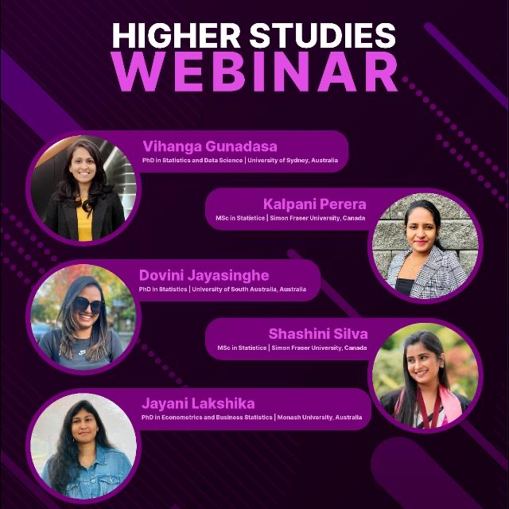

Talks
Faculty of BusEco Three Minute Thesis (3MT) competition 2024
My first 3-minute talk experience. As a higher degree research student, this was my opportunity to raise my profile, practice my presentation skills and communicate my research to the broader community in three minutes.

Victorian branch of the Australian and New Zealand Industrial and Applied Mathematics Society (VicANZIAM) 2024 (RMIT university, Melbourne, Australia)
This is a one-day meeting of the Australian and New Zealand Industrial and Applied Mathematics Society. I presented a research poster with a lightning talk.

Bioinformatics Seminar 2024

Australian Statistical Conference (ASC 2023) (Wollongon, Australia)
My first session talk was titled With non-linear dimension reduction, when can you believe what you see?.

\(12^{th}\) -Conference of the Asian Regional Section of the International Association for Statistical Computing (IASC-ARS 2023) (Wollongon, Australia)
I gave my first invited talk on Viewing the model from non-linear dimension reduction in high-dimensional data space.

Higher studies webinar 2023
Discover the path to higher studies with insights from our trusted alumni at top universities!

Monash NUMBATs Talk 2022
NUMBATs is the name for our research group, Non-Uniform Monash Business Analytics Team, in the Econometrics and Business Statistics Department of Monash University, Australia. As a first year PhD student, I got an opportunity talk about my undergraduate research project.
Estadistica 2021
Estadistica is the annual Statistics Day organized by the Statistics Society of University of Sri Jayewardenepura, Sri Lanka. As an undergraduate researcher, I got an opportunity to open up my research work and experience with the community.
Vx Tech Talk 2021
Vizuamatix (Pvt) Ltd. is a software development company where I completed my research internship. I was able to share my experiences of undergraduate research with Vx team.
17th Applied Statistics Conference, Solvenia September 2021 (virtual)
- Research poster and abstract publication, presentation with named Statistical machine learning for medicinal plant leaves classification.
Young Scientists’ Conference on Multidisciplinary Research (YSCMR), 2021 (virtual)
This is organised by the Young Scientists’ Association of the National Institute of Fundamental Studies, Sri Lanka (NIFS-YSA) October 2021.
Speed-talk presentation on Statistical machine learning for medicinal plant leaves classification.
OCTAVE competition 2021 (virtual)
I was selected as one of the nine finalists and presented my undergraduate thesis in OCTAVE Advanced Analytics Symposium in 2021.